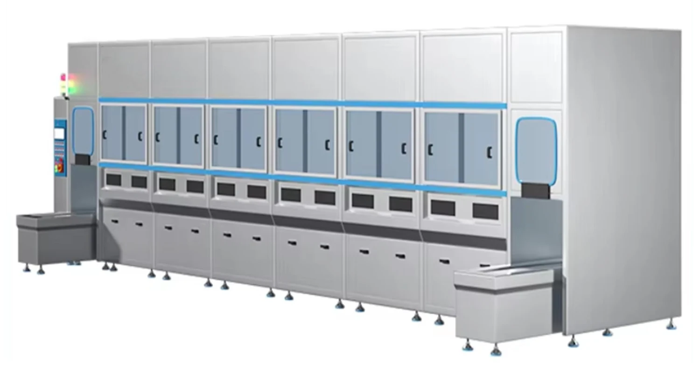

E-drive housings
Aluminium · machining fluids in cavities

Aluminium · machining fluids in cavities
Surface finish · particles before assembly
Channels · process residue
Identify assembled electronics, magnets, coatings and sealed cavities.
Evaluate permitted chemistry and temperature with the material owner.
Plan rinsing, drainage and handling between stages.
Agree particle, dryness and surface-condition checks as required by the customer.
The sequence is assessment guidance. Chemistry, time, temperature and any rinse or drying stage must be validated for the actual material and residue.

Separate cleaning, rinsing, spray or drying functions into a defined process route; basket transfer is manual unless a handling option is specified.
View equipment
Coordinate basket transfer and process stages for a repeatable production route; confirm loading, unloading, controls and interfaces for the project.
View equipmentDedicated carriers, controlled transfer, filtration and process-stage separation are project choices.
Not on the basis of this application guide. Review insulation, bearings, magnets and electrical assemblies before defining a safe part-level process.
No. Battery cells and packs require a separately qualified process and are outside this general equipment selection page.
Provide your drawing, inspection procedure and acceptance criteria. A visual photograph alone does not establish a particle limit.
When the load, route and changeover pattern are stable enough to define transfer timing and interfaces.
Material, dimensions, residue, batch and the required result. Share what you know.